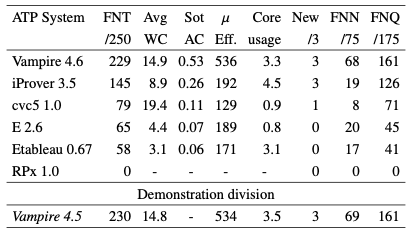

First-order Non-Theorems Results

Salient Systems
- Vampires dominated
- No significant changes
- Times increased since CASC-J10 due to different problems
Performance Measures
- iProver, Vampires, Etableau used the most cores
Portfolio Possibilities
- 14 problems unsolved, 0 all solved
- 86 unique solutions, 79 by Vampire
- Portfolio would not help